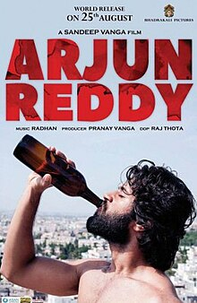

Deverakonda Vijay Sai (born 9 May 1989), professionally known as Vijay Deverakonda,[1] is an Indian actor and film producer who works predominantly in Telugu films.[2][3] One of the highest-paid actors of Telugu cinema, he has featured in Forbes India's Celebrity 100 list since 2018 and has received several accolades, including a Filmfare Award, a Nandi Award, and a SIIMA Award.[4] Deverakonda made his debut with Nuvvila (2011) and received praise for his role in the coming-of-age drama Yevade Subramanyam (2015). He rose to prominence as a leading film actor by starring in the blockbusters Pelli Choopulu (2016) and Arjun Reddy (2017), winning the Filmfare Award for Best Actor – Telugu for his performance as a volatile surgeon in the latter. He further established himself with commercially successful films such as Mahanati (2018), Geetha Govindam (2018), and Taxiwaala (2018).[5][6] In 2019, Deverakonda launched his own production house King of the Hill Entertainment, which produced Meeku Maathrame Cheptha (2019) and Pushpaka Vimanam (2021).[7][8] Beyond his film career, Deverakonda has designed his own fashion brand Rowdy Wear, which launched on Myntra in 2020,[9] and is the co-owner of the volleyball team Hyderabad Black Hawks.[10] Deverakonda is also a celebrity endorser for numerous products and supports various humanitarian causes. Early life Deverakonda Vijay Sai was born in Hyderabad, Andhra Pradesh (now Telangana) to Govardhan Rao and Madhavi.[11][12] His family hails from Thummanpeta village of erstwhile Mahbubnagar district (now Nagarkurnool).[11][13] His father was a television serial director who quit doing them due to lack of success. Vijay completed his schooling in Sri Sathya Sai Higher Secondary School, Puttaparthi, till his 10th standard.[14] He then studied Intermediate at the Little Flower Junior College, Hyderabad.[15] He holds a Bachelor of Commerce degree, which he received from Badruka College of Commerce & Arts.[13][16] His younger brother, Anand Devarakonda, is also an actor in Telugu cinema.[17] Career Early career (2011–2015) Deverakonda made his debut with Ravi Babu-directed romantic comedy Nuvvila (2011).[18] He later appeared in Sekhar Kammula's Life is Beautiful (2012) in a minor role.[19] He was introduced to Nag Ashwin, who later cast him in a supporting role for the 2015 coming-of-age drama Yevade Subramanyam alongside actor Nani.[20] The film was produced by the daughters of Ashwini Dutt, a producer in the Telugu film industry; Priyanka Dutt backed him and once shooting started, Swapna Dutt signed him onto her company.[21][22] Breakthrough and career fluctuations (2016–present) Deverakonda at YouTube Fan Fest in 2018 Deverakonda's first lead role was in Pelli Choopulu, a coming-of-age romance film directed by Tharun Bhascker. The film became commercially successful and won the Filmfare Award for Best Film – Telugu and the Best Feature Film in Telugu at the 64th National Film Awards.[23][24] He starred in the masala film Dwaraka in 2017. He next starred in the romantic drama Arjun Reddy which received both praise and criticism for being bold and radical.[25] However, his portrayal of a self-destructive, short-tempered, and alcoholic surgeon received widespread critical acclaim, and won him the Filmfare Award for Best Actor – Telugu.[26][27] In 2019, Film Companion ranked Deverakonda's performance in Arjun Reddy in "100 Greatest Performances of the Decade".[28] Following Arjun Reddy he starred in Ye Mantram Vesave, which was supposed to release in 2013 but released on 2018. He then starred in Mahanati, a biographical film revolving around the life of actress Savitri. Deverakonda's next release in 2018 was Geetha Arts' romantic comedy Geetha Govindam, in which he starred as an innocent and nervous college professor. The film received mixed-to-positive reviews upon release, and proved to be a major commercial success at the box office. Deverakonda his second nomination for the Filmfare Award for Best Actor – Telugu for his performance in the film. His next film was the Tamil political thriller NOTA, directed by Anand Shankar, which performed poorly at the box office.[29] His next project was UV Creations' supernatural comedy thriller Taxiwaala.[30] In 2019, Deverakonda was seen in Bharat Kamma's Dear Comrade, a romantic action drama, alongside Rashmika Mandanna. He later signed Hero, directed by Anand Annamalai co-starring Malavika Mohanan. But the film was reportedly shelved after beginning production.[31] In 2020, he acted in Kranthi Madhav's romantic drama World Famous Lover opposite Raashi Khanna, Catherine Tresa, Aishwarya Rajesh, and Izabelle Leite which opened to negative reviews.[32] In 2022, he acted in the Hindi–Telugu bilingual film Liger which was directed by Puri Jagannadh and produced by Karan Johar which also opened to highly negative reviews.[33][34] He then starred in Kushi which was directed by Shiva Nirvana and it opened to mixed reviews.[35] The film was a box-office bomb.[36] Deverakonda is set to star in the upcoming film titled Family Star.[37] Other work He was the brand ambassador of food delivery app Zomato.[38] On 15 October 2018, Deverakonda launched his fashion brand Rowdy Wear.[9] Later, in 2020 Rowdy Wear was launched on Myntra.[39] Deverakonda has donated to relief funds, including a donation to families of victims in the 2019 Pulwama attack.[40][41][42][43] Deverakonda conceptualised and founded The Deverakonda Foundation, a nonprofit organisation in April 2019.[44] In early 2020, he donated ₹24,000 through the Foundation to help Ganesh Ambari, a kickboxer who won the Vaco Indian Open International Kick-boxing Championship Title 2020.[45] An initiative was started to battle COVID-19 pandemic crisis. The foundation has successfully aided 17,000 middle-class families with their groceries and basic essentials, spending ₹1.7 crores, with the help of his Middle Class Fund (MCF). More than 8,500 volunteers donated over ₹1.5 crores to join his community effort.[46][47] Organisers decided to end the initiative on 2 June 2020.[48][49] Devarkonda opened his first multiplex theatre in Mahbubnagar in 2021.[50] In the media Deverakonda at Rowdy Sundowner Party 2020[51] Deverakonda says his family used to call him a rowdy every time he did something that they did not approve of. Over time, he started using this term for himself and his fans.[52][53] Deverakonda is known to express his real, honest, and unfiltered opinions on stage or during interviews, for which he has gathered a lot of popularity and criticism, at the same time,[54] as seen during his speech at the audio launch of Arjun Reddy, in 2017.[55][56][57] Deverakonda placed 72nd in the Forbes India Celebrity 100 list of 2018.[58] He was ranked in The Times Most Desirable Men at No. 4[59] in 2018, at No. 3[60] in 2019, at No. 2[61] in 2020. He was additionally featured by Forbes India in their 30 Under 30 list,[62] and became the most-searched South Indian actor according to Google's annual report.[63] Filmography Key † Denotes films that have not yet been released As actor All films are in Telugu, otherwise noted Year Title Role(s) Notes Ref. 2011 Nuvvila Vishnu [64] 2012 Life Is Beautiful Ajay 2015 Yevade Subramanyam Rishi 2016 Pelli Choopulu Prashanth 2017 Dwaraka Erra Srinu/Sri Krishnananda Swamy [65] Arjun Reddy Dr. Arjun Reddy Deshmukh [66] 2018 Ye Mantram Vesave Nikhil "Nikki" [67] Mahanati Vijay Anthony [68] Geetha Govindam Vijay Govind Also singer for "What the Life" [69] NOTA Varun Subramanyam Tamil film [70] Ee Nagaraniki Emaindhi Himself Cameo [71] Taxiwaala Shiva Rawaali
Shalini J. R. (9 May 2018). "Vijay Deverakonda celebrates his birt
Shalini J. R. (9 May 2018). "Vijay Deverakonda celebrates his birth in a unique way". The Times of India. Archived from the original on 11 January 2019. Retrieved 3 January 2019. "Did Numerology Change In 'The Deverakonda's Name Affect WFL Prospects ?". Sakshi Post. 14 February 2020. Retrieved 16 August 2020. Chowdhary, Y. Sunita (17 February 2015). "This film came at the right time". The Hindu. Archived from the original on 26 June 2019. Retrieved 30 August 2017. P Kirubhakar. "SIIMA 2019: Vijay Deverakonda and Keerthy Suresh win big. See pics – Movies News". Indiatoday.in. Archived from the original on 16 August 2019. Retrieved 17 August 2019. Ramavat, Mona (23 September 2017). "Serial kisser Deverakonda is the Emraan Hashmi of Telugu cinema". India Today. Archived from the original on 17 February 2020. Retrieved 11 February 2020. Vyjayanthi Network (15 January 2015). "Yevade Subramanyam Theatrical Trailer – Nani, Malavika Nair". Archived from the original on 24 February 2018. Retrieved 30 August 2017 – via YouTube. "Vijay Deverakonda: I want to create a platform for new talent". The Indian Express. 5 November 2019. Archived from the original on 13 January 2020. Retrieved 13 January 2020. "Vijay Deverkonda Turns Producer, Announces Debut Production Meeku Maathrame Cheptha". News18. 29 August 2019. Archived from the original on 13 January 2020. Retrieved 13 January 2020. Vyas (17 July 2018). "Vijay Devarakonda's Rowdy Wear On Top". www.thehansindia.com. Retrieved 9 February 2022. Bandyopadhyay, Bohni (23 January 2023). "Vijay Deverakonda Becomes Co-owner of Hyderabad Black Hawks Team in Prime Volleyball League". News18. Retrieved 13 July 2023. "Vijay Deverakonda Interview, Talking Movies With iDream". iDream Telugu Movies. 27 February 2017. Retrieved 27 November 2021 – via YouTube. Ravi, Murali (4 January 2020). "Vijay Deverakonda changes his name! To what?". Tollywood. Archived from the original on 11 October 2020. Retrieved 2 February 2020. Dundoo, Sangeetha Devi (30 August 2017). "Fearless in front of the camera". The Hindu. ISSN 0971-751X. Archived from the original on 26 June 2019. Retrieved 30 August 2020. Arjun Reddy Hero Vijay Deverakonda Exclusive Interview || Frankly With TNR #74, retrieved 9 February 2022 "Celebrity Education Qualification: Vijay Deverakonda is a Commerce Graduate, Pressured by Family to Pursue MBA". News18. 18 August 2022. "Celebrity Education Qualification: Vijay Deverakonda is a Commerce Graduate, Pressured by Family to Pursue MBA". News18. 18 August 2022. Retrieved 13 July 2023. Dundoo, Sangeetha Devi (18 November 2020). "Anand Deverakonda: 'I haven't done anything heroic so far'". The Hindu. ISSN 0971-751X. Retrieved 12 March 2021. "Vijay Devarakonda made his debut with Nuvvila". The Times of India. 4 September 2020. Retrieved 15 November 2020. "Vijay Deverakonda to star in Anand Shankar's next". The News Minute. 2 March 2018. Retrieved 12 March 2021. Chowdhary, Y. Sunita (9 February 2015). "An eye for story". The Hindu. Archived from the original on 25 June 2017. Retrieved 30 August 2017. Vyjayanthi Network (21 February 2015). "Swapna Dutt Speech – Yevade Subramanyam Audio Launch Live – Nani, Malavika Nair". Archived from the original on 7 March 2016. Retrieved 30 August 2017 – via YouTube. Radiokhushi. "'Evade Subramanyam' says Nani". www.radiokhushi.com. Archived from the original on 30 August 2017. Retrieved 30 August 2017. "64th National Film Awards 2017" (PDF). Directorate of Film Festivals. Archived (PDF) from the original on 25 July 2020. Retrieved 24 August 2020. "The Times Group". epaperbeta.timesofindia.com. Archived from the original on 27 August 2017. Retrieved 30 August 2017. "Arjun Reddy movie review: Vijay Devarakonda-starrer heralds a new chapter in Telugu cinema". Firstpost. 25 August 2017. Retrieved 26 December 2021. "Women's groups protest against 'Arjun Reddy' in Vijayawada, demand ban on film's screening". The News Minute. 1 September 2017. Archived from the original on 2 September 2017. Retrieved 3 September 2017. "Arjun Reddy movie review: Intense, raw and unbelievably honest. 5 stars". Hindustan Times. 26 August 2017. Archived from the original on 28 August 2017. Retrieved 27 August 2017. "100 Greatest Performances of the Decade". 100 Greatest Performances of the Decade. Archived from the original on 19 December 2019. Retrieved 26 November 2019. "'NOTA' Worldwide Closing Collections – Disaster". Telugu360.com. 27 October 2018. Archived from the original on 28 October 2018. Retrieved 28 October 2018. "Taxiwaala Movie Review". The Times of India. "Vijay Deverakonda's Hero shelved". Cinema Express. 23 July 2019. Retrieved 12 March 2021. "Vijay Deverakonda's new film rolls out!". Deccanchronicle.com. 21 October 2018. Archived from the original on 24 September 2019. Retrieved 17 August 2019. "Ananya Panday to star opposite Vijay Devarakonda in Puri Jagannadh's next". New Indian Express. 20 February 2020. Archived from the original on 5 June 2020. Retrieved 5 June 2020. "Vijay Deverakonda-Ananya Panday's film titled